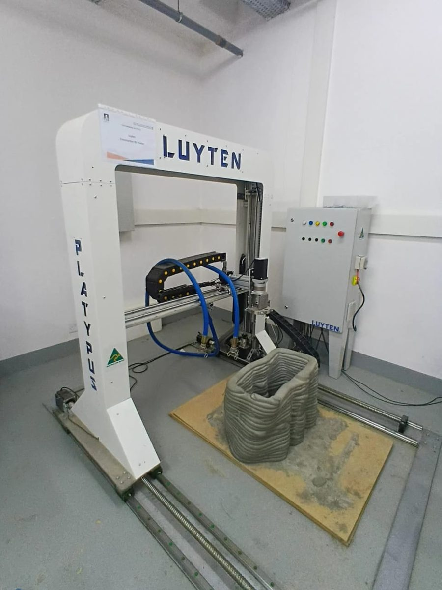
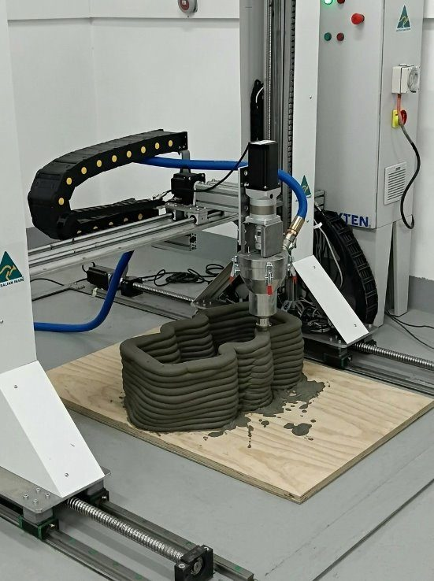
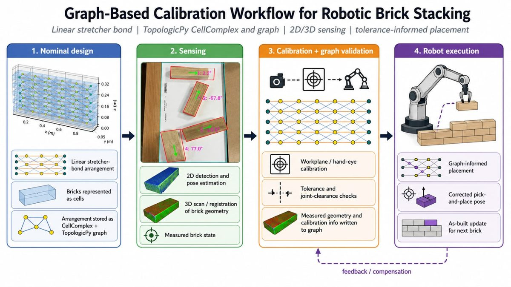
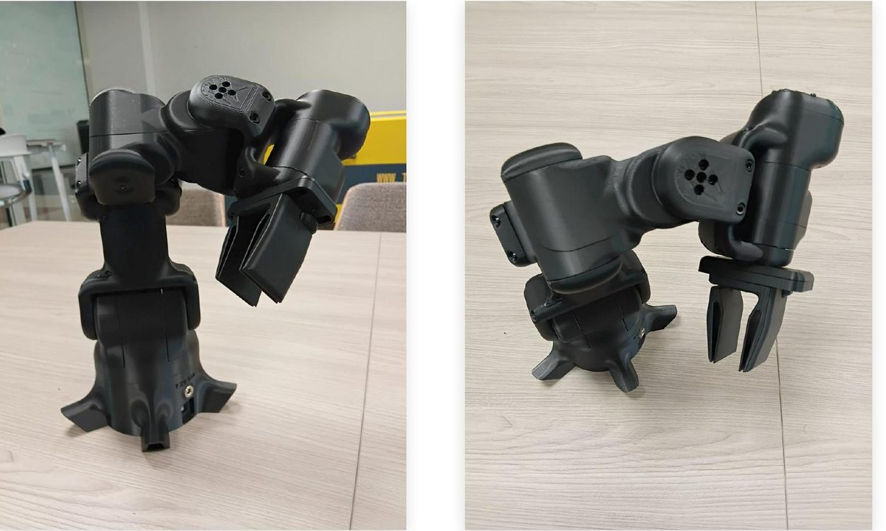

Large-scale concrete 3D printing
A gantry additive platform with a custom concrete mix, used to prototype architectural forms and structural elements at building scale.


The lab operates a gantry-based large-scale concrete printer developed around a custom mix tuned for extrudability and early-age strength.
Work on the platform spans the full chain: material mix design, CAM and toolpath generation, print-parameter screening, and the geometric constraints that decide whether a given architectural form can actually be printed.
The platform is the lab's bridge between computational design research and construction-scale output — the point where a geometry that performs well in simulation has to survive contact with a real material.
More in Robotic Fabrication

Robotic brick stacking with computer vision
A closed-loop masonry workflow where 2D and 3D sensing measure each brick's true pose and the robot compensates every placement.
View project →
Custom robotics, end-effectors & VTOL platforms
Purpose-built grippers, end-effectors and airframes designed, printed and assembled in-house so fabrication hardware adapts to the research.
View project →